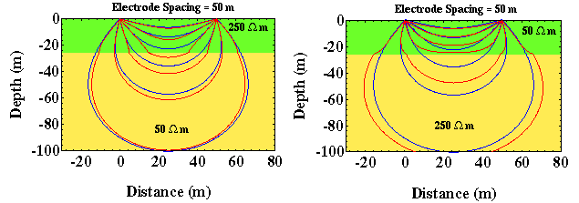

Current Flow in Layered Media
How does the presence of depth variations in resistivity affect the flow of electrical current? In the previous examples, we assumed that the Earth has a constant resistivity. Obviously, this isn't true or else we wouldn't be trying to map the variation in resistivity throughout the Earth. Although resistivity could conceivably vary in depth and in horizontal position, we will initially only consider variations in depth. In addition, we will assume that these depth variations in resistivity can be quantized into a series of discrete layers, each with a constant resistivity. Thus, initially we will not consider variations in resistivity in the horizontal direction or continuous variations with depth*.
Shown below are current-flow paths (red) from two current electrodes in two simple two-layer models. The model to the left contains a high-resistivity layer (250 ohm-m) overlying a lower resistivity layer (50 ohm-m). This model is characteristic of the resistivity profile that would be found in a region where unsaturated alluvium overlies water saturated alluvium. The model to the right contains a low-resistivity layer (50 ohm-m) overlying a higher resistivity layer (250 ohm-m). This model is characteristic of a perched aquifer. For comparison, we've also shown the paths current would have flowed along if the Earth had a constant resistivity (blue) equal to that of the top layer. These paths are identical to those described previously.
Notice that the current flow in the layered media deviates from that observed in the homogeneous media. In particular, notice that in the layered media the current flow lines are distorted in such a way that current preferentially seems to be attracted to the lower-resistivity portion of the layered media. In the model on the left, current appears to be pulled downward into the 50 ohm-m layer. In the model on the right, current appears to be bent upward, trying to remain within the lower resistivity layer at the top of the model. This shouldn't be surprising. What we are observing is the current's preference toward flowing through the path of least resistance. For the model on the left, that path is through the deep layer. For the model on the right, that path is through the shallow layer.
*For all practical purposes, this layered model does allow for continuous variations in resistivity with depth, because we have made no constraints on the number of layers or their thicknesses allowed in the model. Thus, a smoothly varying resistivity depth profile could be approximated by a large number of very thin, constant resistivity layers.
Resistivity
- Current Flow and Ohm's Law pg 4
- The Fund. Electrical Property is Resistivity, NOT Resistance pg 5
- Resistivities for Common Earth Materialspg 6
- Current Density and Electric Fieldpg 7
- A First Estimate of Resistivitypg 8
- Current Flow From Two Closely Spaced Electrodespg 9
- A Practical Way of Measuring Resistivity pg 10
- Sources of Noise pg 11
- Depth of Current Penetration V.S. Current ElectrodeSpacing pg 12
- Current Flow in Layered Media pg 13
- Variation in Apparent Resistivity: Layered Versus Homogeneous Media pg 14
- Current Flow in Layered Media Versus Electrode Spacing pg 15
- A Second Example of Current Flow in Layered Mediapg 16